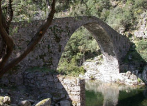
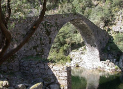

Bonifacio, située à l'extrême sud de la Corse, est la commune française la plus méridionale de la France métropolitaine. Au sud, les Bouches de Bonifacio séparent la Corse de la Sardaigne italienne.
La ville constitue après Porto-Vecchio la deuxième agglomération du Freto, microrégion s'étendant depuis Bonifacio jusqu'à Conca au nord et Monacia-d'Aullène à l'ouest en passant par Figari et son aéroport.
Bonifacio comporte un port et une citadelle. Celle-ci est établie sur un cap dominant la mer par une falaise qui est une « veine » de calcaire, roche assez rare en Corse dont le sol est plutôt granitique. Ce cap est long de 1 600 mètres et large de 100 mètres.
Son arrière-pays, le Piali, autrefois importante terre agricole, est connu pour ses baracun (mot issu du dialecte bonifacien), constructions en pierres sèches apparentées aux bories provençales.
Contact mail du webmaster Lucas Torres- Copyright©France 2019
 
